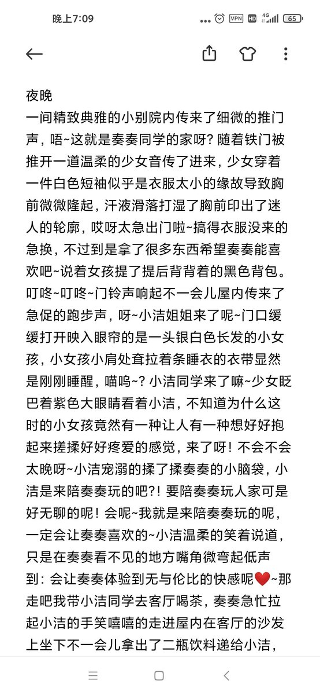
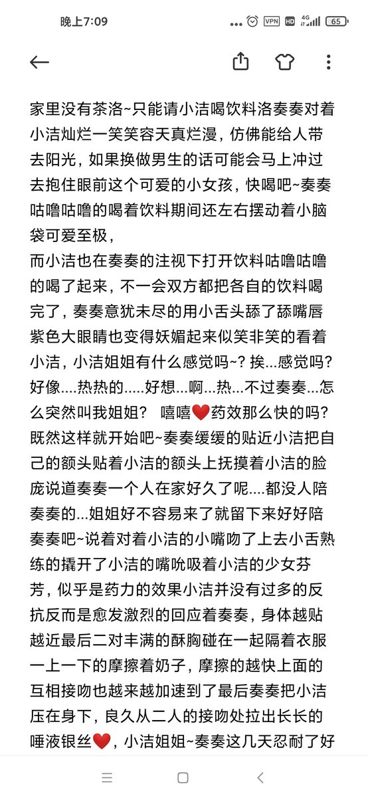
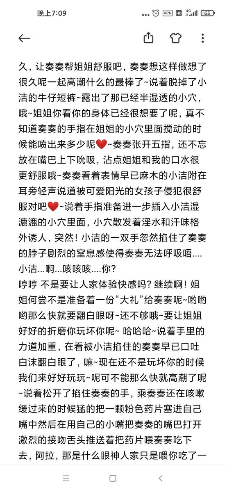
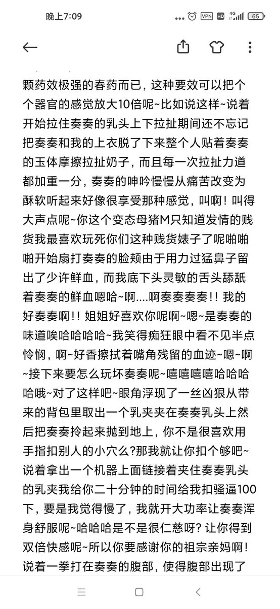

这是第一篇参赛作品，足足有3000字！是来自@xiaojieQwQ 的倾情创作，作为奏奏大小姐的点评如下:字里行间充满了爱意，即使内容对于本大小姐来说比较清水，也能感受到纯爱的份量，从我个人的角度去打分，满分10分的话可以给个7.5分。
大家如果喜欢的话可以留言发表自己的意见，点点赞什么的～
#文援pic.twitter.com/xYfeDnwwiy
大家如果喜欢的话可以留言发表自己的意见，点点赞什么的～
#文援pic.twitter.com/xYfeDnwwiy



